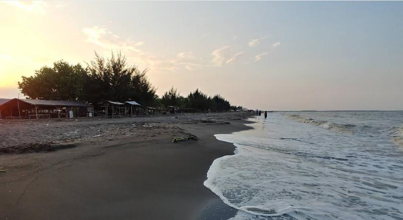
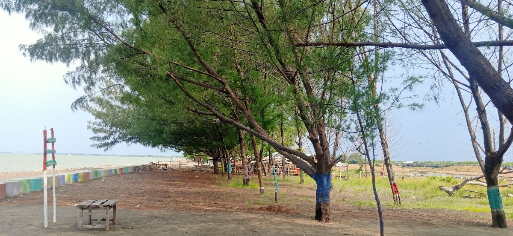

Temukan Pesona
Pantai Randusanga
Tempat angin laut menyapa, senja bercerita,
dan momen sederhana terasa istimewa.

Lebih dekat dengan laut.
Lebih jauh dari hiruk pikuk.
Di pesisir utara Brebes, Pantai Randusanga Indah menawarkan panorama Laut Jawa dan suasana pantai yang akrab. Singgah sejenak, rasakan angin pesisir, dan nikmati waktu bersama orang terdekat.
Dari berjalan santai di tepi laut hingga menikmati hidangan ikan bakar, selalu ada cara sederhana untuk membuat hari terasa lebih berarti.
Datang untuk pemandangan.
Tinggal untuk kenyamanan.
Kenali fasilitas untuk merencanakan kunjungan.
Ketersediaan dan kondisi perlu dikonfirmasi di lokasi.
Satu pantai. Banyak kenangan.
Sekilas suasana Randusanga.
Klik foto untuk melihat lebih dekat.
Foto: Alton Super / Inibaru, @rasa_brebes / Portal Brebes, Bahrul Ulum / Kompasiana, Radar Tegal, Triptrus. Sumber foto
Hari yang indah,
dimulai dari rencana sederhana.
Informasi penting sebelum berangkat
menikmati udara segar pesisir Brebes.
Informasi tiket
PER KUNJUNGANHarga dapat berubah sesuai kebijakan pengelola.
Tarif resmi belum terkonfirmasi. Tanyakan kepada petugas loket sebelum masuk.
Luangkan waktu.
Nikmati suasananya.
Jadwal operasional belum terverifikasi. Pastikan jam kunjungan kepada pengelola sebelum berangkat.
Tak perlu jauh
untuk merasa lepas.
Pantai Randusanga Indah
Desa Randusanga Kulon, Kecamatan Brebes,
Kabupaten Brebes, Jawa Tengah.
Ikuti petunjuk menuju kawasan pantai. Periksa kondisi rute dan lalu lintas sebelum memulai perjalanan.
Siap Menikmati
Pantai Randusanga?
Sisihkan waktu untuk angin laut, langit luas,
dan cerita baru bersama orang tersayang.